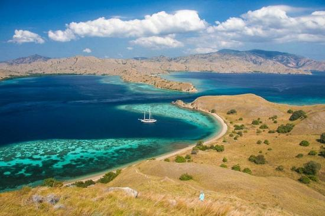

Post by Adytia, Sunday 06 Juny 2018
Gili Laba atau Gili Lawa merupakan sebuah pulau kecil yang berada di sekitar kawasan Taman Nasional Komodo, Flores, Nusa Tenggara Timur. Pulau ini merupakan salah satu destinasi wisata yang tidak boleh Anda lewatkan karena pesona alam yang dimiliki sangat menakjubkan. Pulau kecil tak berpenghuni ini menawarkan panorama cantik yang memesona. Hamparan lautan Flores yang tak pernah pudar dari atas bukit menjadi sebuah magnet yang tak pernah lekang di ingatan.
Di pulau ini, mata Anda akan dimanjakan oleh keeksotisan warna biru tua dan turqoise dari area laut dan laut dangkal serta pasir putih yang membentang di area pantai menambah kesempurnaan dari pulau ini. Jika Anda datang saat bulan Agustus dan September, hamparan rumput hijau yang ada pada bukit Gili Laba akan mengering dan berubah warna menjadi cokelat kekuningan sehingga foto yang dihasilkan tidak perlu tambahan filter lagi.
Dari puncak pulau ini Anda dapat menyaksikan seluruh pemandangan dari Kepulauan Komodo dengan sangat jelas. Pemandangan yang dapat dilihat di atas puncak yaitu pemandangan pasir putih yang berpadu dengan birunya air laut yang bergradasi dengan warna hijau. Anda juga dapat melihat bukit-bukit dari beberapa pulau yang ada di Kepulauan Komodo. Warna bukit-bukit yang ada akan berbeda tergantung kepada musim yang ada. Pada musim hujan Anda dapat melihat hijaunya pepohonan yang mendominasi bukit dan pada musim kemarau warna kuning atau gersangnya bukit akan mendominasi pemandangan bukit. Walaupun begitu panorama ini selalu terlihat cantik dan memukau
Sepanjang jalan menuju bukit-bukit yang ada di Gili Laba, Anda akan bertemu banyak tanjakan-tanjakan yang akan menguji kekuatan diri Anda untuk mendaki ke puncak. Bahkan dibeberapa lokasi tanjakkan pun juga curam. Butuh waktu tempuh satu jam untuk menaklukan puncak Gili Laba. Tidak ada jalur pendakian khusus di pulau ini, sehingga Anda bisa naik dari sudut mana pun. Rasa capek yang sudah Anda kuras ketika mendaki puncak terbayar dengan semua pemandangan yang indah.
Selain trekking mendaki bukit, disini Anda bisa bermain air, snorkeling dan berjemur. Jangan lupa membawa perbekalan minum dan makanan secukupnya. Gunakan pula sepatu atau sandal tracking yang aman. Lokasi Gili Laba cukup dekat dengan Pulau Komodo. Dari pulau tersebut, Anda hanya akan menghabiskan perjalanan dalam waktu 1 jam. Akan tetapi, jika dari Labuan Bajo, Anda akan menghabiskan waktu cukup lama yaitu perjalanan selama kurang lebih 4 jam. Biasanya perjalanan menuju ke Gili Laba merupakan salah satu rangkaian destinasi wisata dari Komodo Tour yang akan mengunjungi beberapa lokasi.
Sumber : https://ksmtour.com/informasi/tempat-wisata/nusa-tenggara-timur/gili-laba-indahnya-sebuah-surga-nusa-tenggara-timur.html